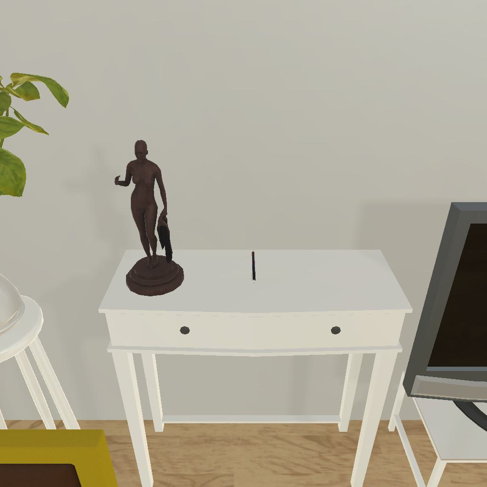
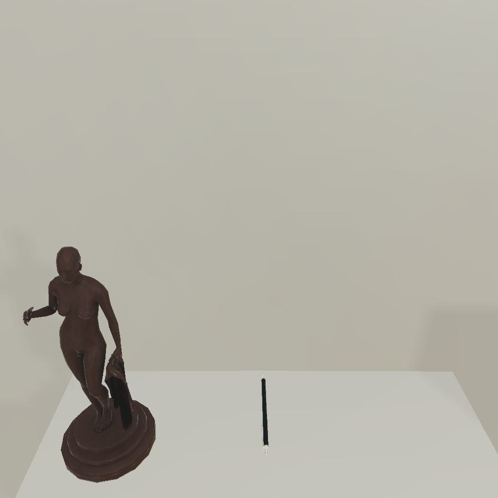

---------------------------------------------------------task: 4---------------------------------------------------------
--------------------------------------------------------------------------------------------------------------------------------------------------------------------
--------------------------------------------------------------------------------------------------------------------------------------------------------------------
Step:--------------------------------------------------------------------------5-------------------------------------------------------------------------------
----------------------------------------
VLM Prompt:
Image1:
Image2:
Image3:
**Instruction**
1. Analyze the provided images to identify all visible household objects and compare the difference between images (e.h. whether the object is opened or not and taken on hand or not), focusing on those relevant to the task description "examine the statue with the floorlamp."
2. Use the analysis of images and the task hint "The agent must find an object of the desired type, locate and turn on a light source with the desired object in-hand." to answer the question: what is the most reasonable action in the choices for the task description "examine the statue with the floorlamp"?
3. Decide and write the answer using the template: The answer is: (i): , where i is the real number. If there is no desired object in images, search every place based on **Initial Observation** to find the object. And if no one is exactly correct, choose a similar answer.
**Initial Observation**
You are in the middle of a room. Looking quickly around you, you can see armchair (1), coffeetable (1-2), sidetable (1), garbagecan (1), drawer (1), sofa (1), diningtable (1)
**Answer Choices**
(1): go to armchair 1
(2): go to coffeetable 1
(3): go to garbagecan 1
(4): go to drawer 1
(5): go to sofa 1
(6): go to coffeetable 2
(7): go to diningtable 1
(8): take statue 1 from sidetable 1
(9): take pen 1 from sidetable 1
(10): examine sidetable 1
**Answer**
Let's think step by step by following the instructions.
----------------------------------------
----------------------------------------
Original Response:
1. Analyzing the images:
- Image 1 and Image 2: Both images show a statue and a pen on the sidetable, with no discernible difference between them.
- Image 3: The image is zoomed in on the statue and pen on the sidetable, but there's no clear indication of the floorlamp or any action being taken with the objects.
2. Based on the task description "examine the statue with the floorlamp," we need to find a floorlamp and examine the statue in its light. The hint suggests that the agent must find an object of the desired type (statue) and locate and turn on a light source (floorlamp) with the desired object in-hand. However, none of the images show a floorlamp.
3. Based on the **Initial Observation**, none of the locations mentioned includes a floorlamp. Since the task is to "examine the statue with the floorlamp," the most logical first step is to take the statue, as it is the desired object mentioned in the task.
The answer is: (8): take statue 1 from sidetable 1
----------------------------------------
----------------------------------------
>>> Refine Original VLM Response and Get Pure Action: take statue 1 from sidetable 1
----------------------------------------
-----------------------------------------------------------------
Running time: 18.308377981185913 seconds
Total Money: 1.72684
-----------------------------------------------------------------
-----------------------------------------------------------------
Text Observation:You pick up the statue 1 from the sidetable 1.
-----------------------------------------------------------------
UNSUCCEED